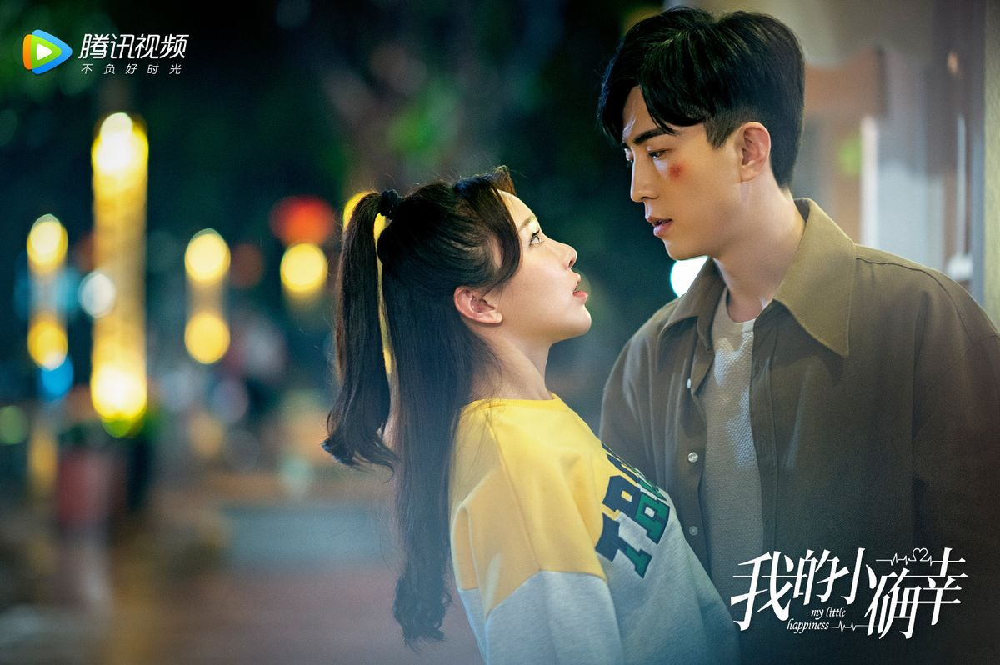

É uma série de televisão romântica chinesa de 2021 estrelada por Xing Fei, Tang Xiaotian, Huang Yilin e Li Chuan. Dirigido por Yang Long, é adaptado do romance You Are My Little Luck de Dong Ben Xi Gu. Ele estreou no Tencent Video e WeTV em 13 de janeiro de 2021, até 27 de janeiro de 2021.
Cong Rong é uma jovem que desde pequena sonhou em ser advogada, por causa da admiração que tinha por seu pai. Porém, sua mãe era contra e fez com que ela fosse estudar em Melbourne, na Austrália. Ela fez o que sua mãe desejou que ela fizesse e obteve seu diploma em finanças, mas morar fora da Coreia não estava em seus planos. Sem sua mãe saber, ela volta para a Coreia e consegue um estágio em direito no Hospital Shenzhen Yun Ji. Lá, ela encontra seu amigo de infância Wen Shao Qing que é cirurgião no hospital,mas ela não reconhece logo de cara, o que o deixa muito desapontado. Quando crianças eles haviam prometido que um dia voltariam a se encontrar e se casariam. Trabalhando lado a lado, eles vão se aproximando e Cong Rong, mesmo sem se lembrar que Shao Qing era seu amigo de infância, ela se apaixona por ele novamente.
Wen Shao Qing (Tang Xiao Tian) é um cirurgião muito talentoso e rigoroso com seus alunos. Ele tem um amor de infância e ainda espera por ela. Sua vida se resume em estudos e trabalho. Já na parte amorosa, seu coração é fechado! Além de muito bonito, ele é super popular no hospital, e todas as mulheres têm uma queda por ele, seja um simples desejo até um amor unilateral, como no caso de Qin Chu (Deng Yu Li), que o ama desde a faculdade.
Cong Rong (Fei Xing), o amor de infância do nosso cirurgião, precisou mudar de cidade após a morte de seu pai, mas eles fizeram uma promessa de se encontrar. Porém, ela não o reconheceu, pois ele era gordinho quando era criança. Sua paixão pela advocacia veio da admiração por seu pai, então ela foi estagiar no hospital, onde se deparou com o temperamental cirurgião. Mesmo sem saber que ele era seu amigo, ela se apaixonou por ele.
Zhou Cheng Cheng (U, Lin Huang), melhor amiga da Cong Rong, é a empreendedora que vive inovando em seus negócios. Filha de uma família rica, ela resolver colocar a cara no mundo, sua personalidade é livre, ela não mede palavras nem esforços em tudo, mas principalmente quando o assunto é o amor. Ela acaba se apaixonando por seu vizinho, um escritor que tem muitos talentos, mas que atualmente dirige uma biblioteca.
Wen Rang (Leon Li), o escritor com múltiplas qualidades, é tio do Shao Qing. Ele teve um relacionamento bem frustrado e, por isso, não quis mais se relacionar com ninguém, todo mundo que se aproxima dele é enxotado. Seu relacionamento com o sobrinho é muito engraçado, apesar dele se mostrar frio, seu coração é mole.
